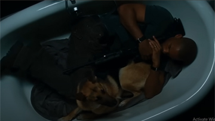

TEMPAT TERBAIK Untuk Mencari Rekomendasi dan Membahas Seputar Film
Temukan film terbaik yang sangat layak kamu tonton atau lihat pembahasan tentang film favoritmu!
JELAJAHI SEKARANGSELAMAT DATANG DI REKOMFILM
Pilih Artikel Berdasarkan Kategori:
Adegan 'Titanic' yang Dihapus: Pertemuan Rose dan Brock yang Menyentuh Tapi Terlupakan
📅 Update: 31 Mei 2025
LIHAT FAKTA →

Ending Alternatif 'I Am Legend' Ini Tak Pernah Tayang Tapi Mengubah Semuanya
📅 Update: 30 Mei 2025
LIHAT FAKTA →


7 Twist Ending Underrated yang Membuat Film Blockbuster Terasa Datar
📅 Update: 25 Mei 2025
LIHAT REKOMENDASI →
5 Film Thriller dengan Ending Mengejutkan yang Jarang Diketahui
📅 Update: 24 Mei 2025
LIHAT REKOMENDASI →
5 Film Obat Depresi yang Diam-Diam Menyelamatkan Hidup Orang Tanpa Mereka Sadari
📅 Update: 23 Mei 2025
LIHAT REKOMENDASI →
5 Film Inspiratif untuk Kamu yang Sudah Lelah Ditanya 'Kapan Nikah?'
📅 Update: 20 Mei 2025
LIHAT REKOMENDASI →
5 Film Inspiratif untuk Fresh Graduate yang Sedang Berjuang Cari Pekerjaan
📅 Update: 20 Mei 2025
LIHAT REKOMENDASI →

Pilih Artikel Berdasar Kategori: